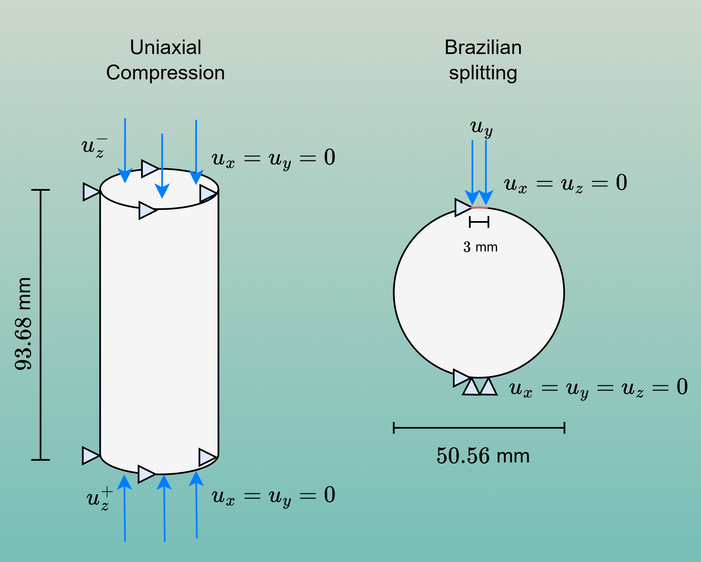
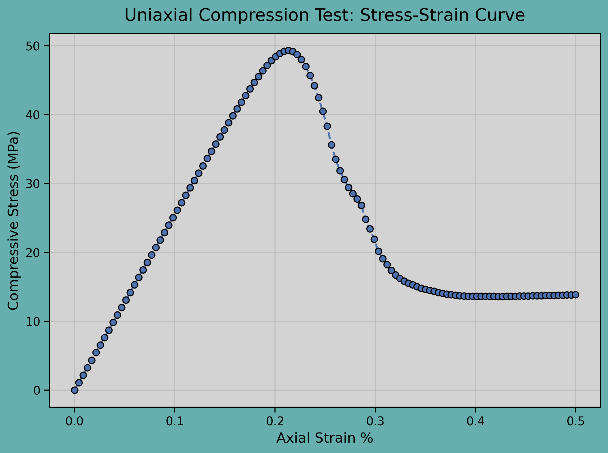
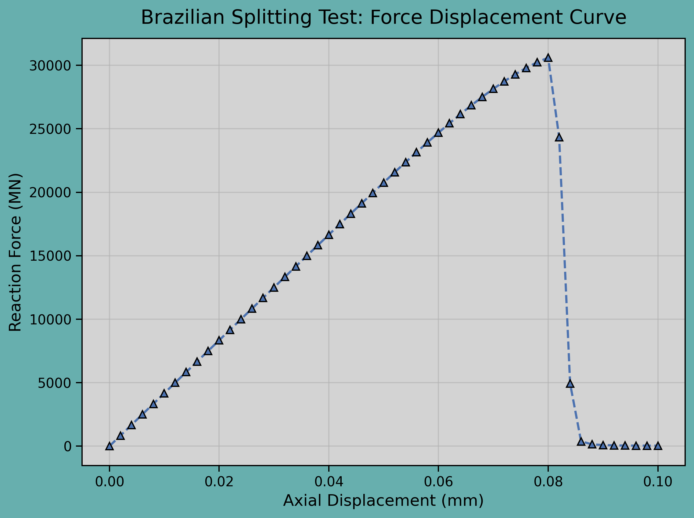

3D Simulations for Composite Material
This example considers a three-dimensional concrete cylinder with a matrix-inclusion structure. Two types of simulations are performed: a uniaxial compression test and a Brazilian splitting test.
- To provide a representative example of three-dimensional simulations.
- To verify that the composite response remains bounded by the strength limits of its constituent materials.
Material Parameters and Boundary Conditions
Material parameters are listed in the format (aggregate, cement). For example, Young's modulus is given as \(E = (E_\text{agg}; E_\text{ce})\).

| Geometry | Value |
|---|---|
| Specimen Shape | Cylinder |
| Diameter (mm) | 50.56 |
| Radius (mm) | 25.28 |
| Height (mm) | 93.68 |
| Aggregate Volume Fraction | 0.062 |
| Parameter | Value |
|---|---|
| Young's Modulus \(E\) (MPa) | 50,000; 25,000 |
| Poisson's Ratio \(\nu\) | 0.20; 0.20 |
| Critical Energy Release Rate \(G_c\) (MPa\(\cdot\)mm) | 0.03; 0.0125 |
| Crack Band Width \(l\) (mm) | 1.5; 1.5 |
| Crack Geometry Function \(\alpha(d)\) | \(d\) |
| Normalization Coefficient \(c_0\) | 2.666666667 |
| Extra Driving Force | Value |
|---|---|
| Compressive Strength \(\sigma_\text{c}\) (MPa) | 80; 30 |
| Tensile Strength \(\sigma_\text{t}\) (MPa) | 7; 2.5 |
| Crack-Width Coefficient \(\delta^\varepsilon\) | 0.16; 0.64 |
Results and Post-processing




\[
\sigma_t = \frac{2P_{max}}{\pi H D} = \frac{2\times 30595}{\pi \times 93.68 \times 50.56} \approx 4.11 MPa
\]
This result indicates that even a small inclusion volume fraction (0.062) with higher strength can significantly enhance the overall mechanical response of the composite.
Both results are consistent with the expected composite behavior, where the effective strength is bounded between those of the weakest and strongest constituents.
Input Files
The input files for this tutorial are available below: